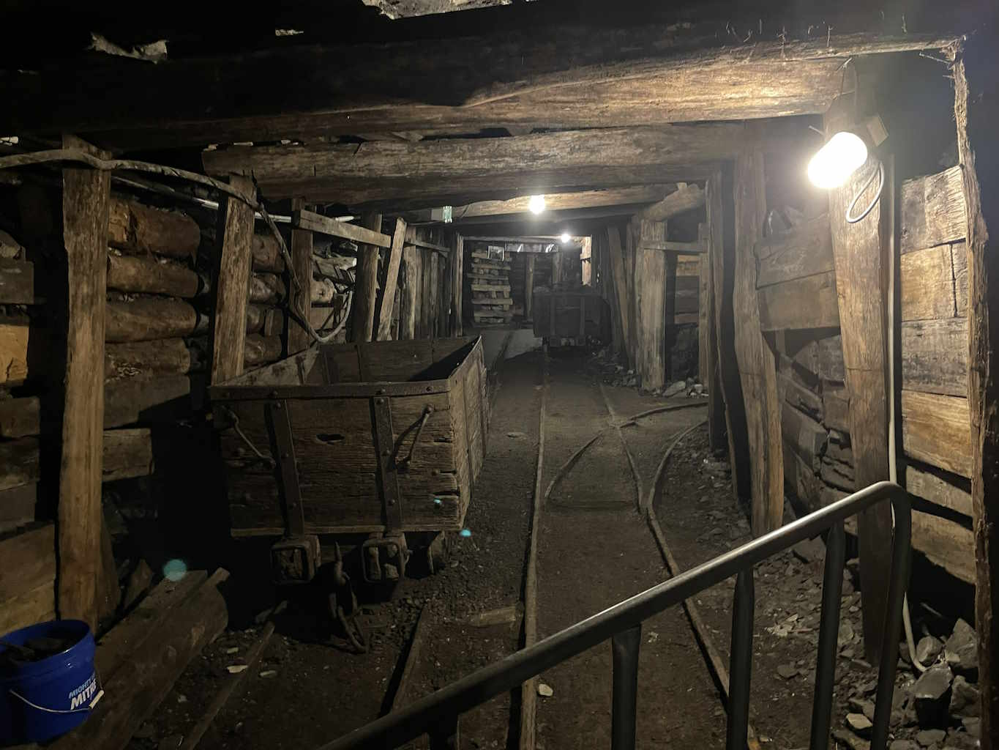
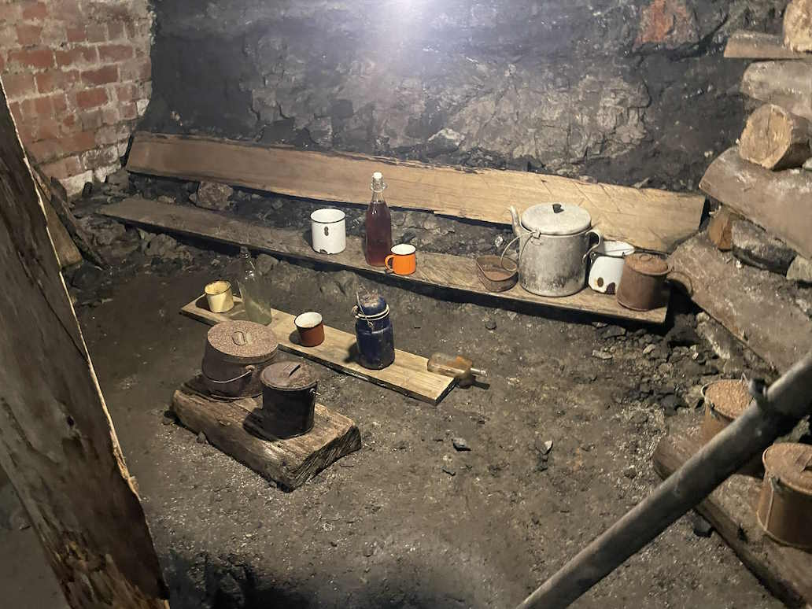
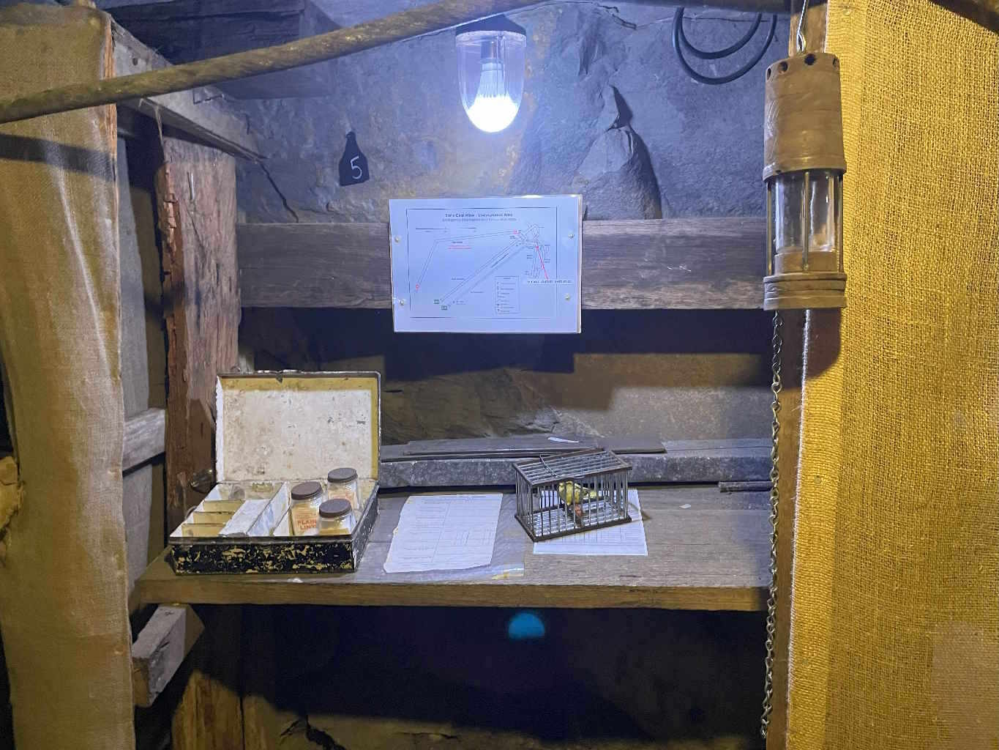
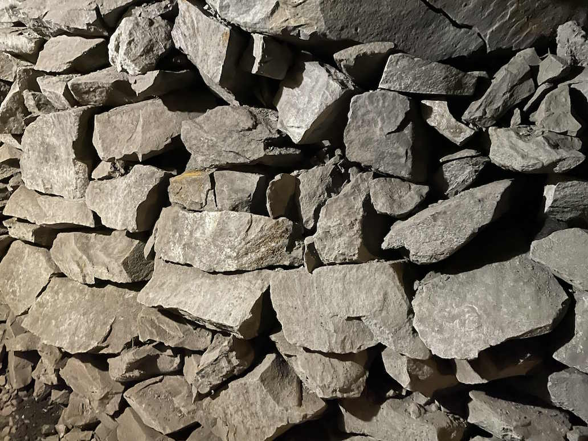
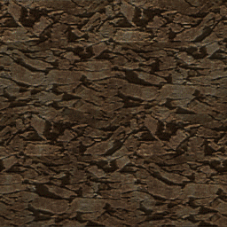
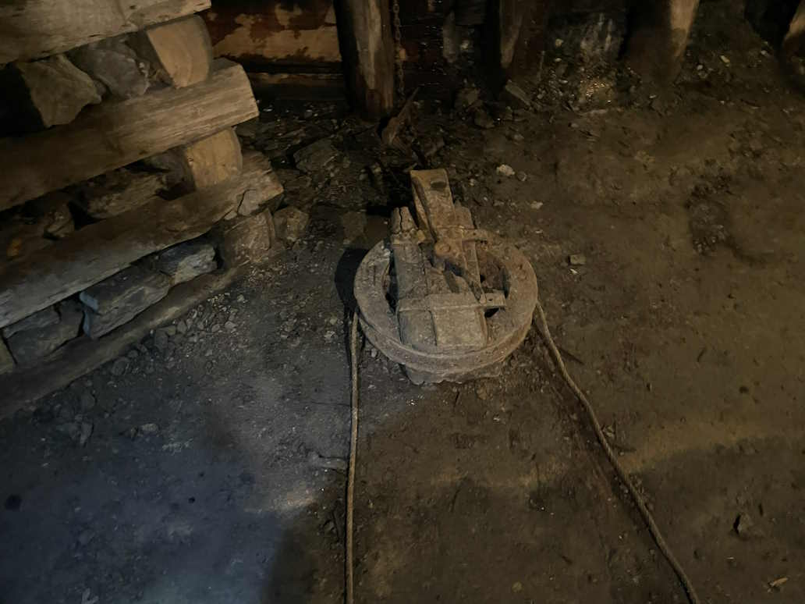
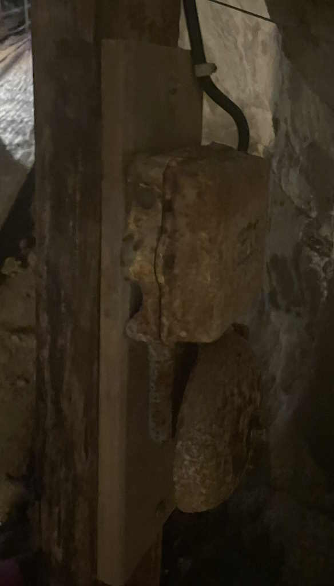
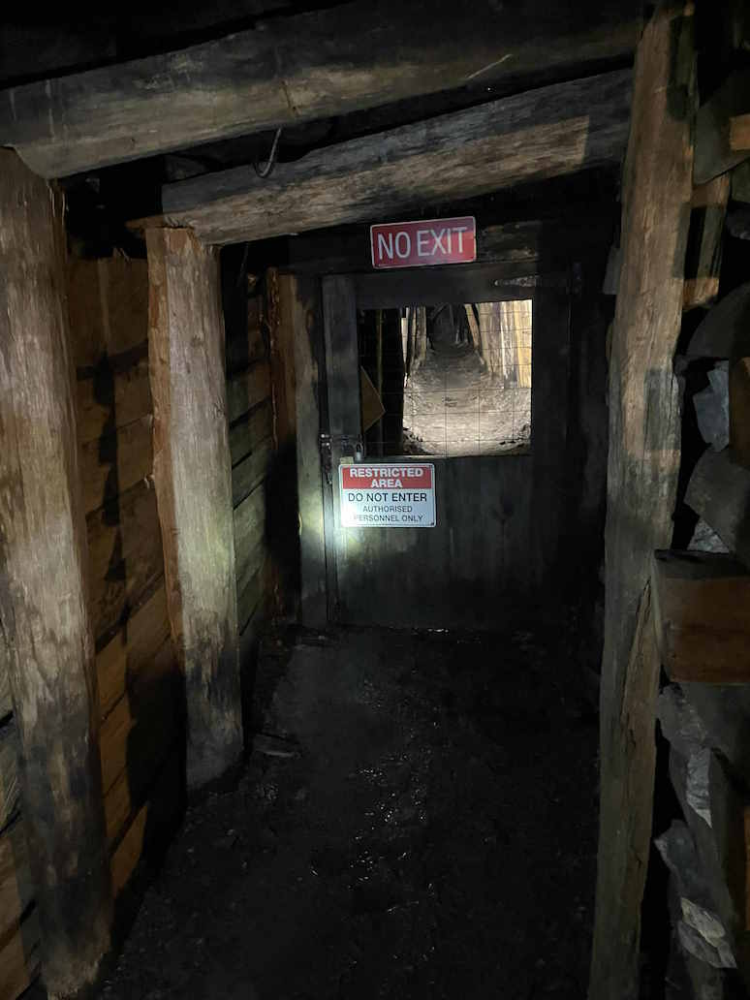

this place is loosely uses the Wonthaggi State Coal Mine as inspiration.
Its a coal place! (pun intended)




Some images where used (with alteration) to build textures!

can you see the resemblance?



